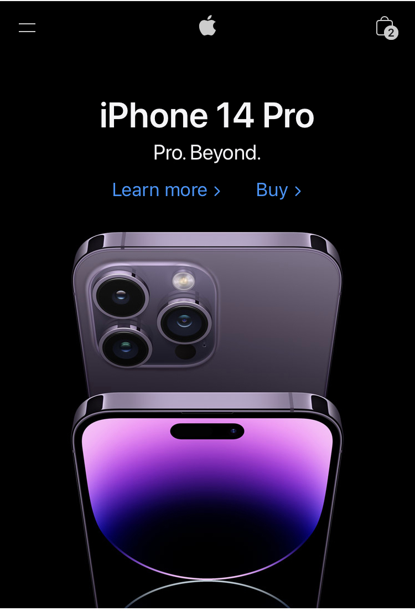

White Space and Clean Design
Google front searching page uses the white space and clean design well, because we can locate where is the searching page very easy
Contrast
Apple
apple.com Apple website uses the design principle of contrast very well, because just by loopking at the front page, you can see their new product and also see what's new on that new product
Alignment
YouTube
youtube.comYouTube uses the design principle alignment well, because when you first open the website, every elements are in a good position, and the order of appearance is very nice and neat.